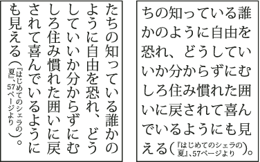

Use warichu
The Warichu option in the Character panel decreases the type size of selected text to a percentage of the original and stacks the type—horizontally or vertically, according to the orientation—on multiple lines.

Vertical and horizontal text with warichu